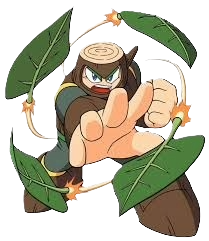

The whole concept of a deadly robot made of wood is definitely very silly, but this is a video game, so that makes it possible... or something! His entire stage is nature themed, so there are lots of animal themed robots throughout the stage. Bats, bunnies, dogs, gorillas, and even chickens! The stage does not really have anything all that difficult in it... the mini-bosses can actually be skipped entirely via Time Stopper, the chickens follow a set running pattern so you always know where to stand, and everything else is disastrously weak to Broken Blade.
Soundtrack Reputation: The music is highly acclaimed and considered one of the best soundtracks of all time. Awards: It won "Best Graphics and Sound" and "Best Play Control" at the 1989 Nintendo Power Awards. The "Final" Boss: The final boss is an alien, and the game is the only one in the series to have only one theme for all boss fights.
Wood Man is a boss from Mega Man 2 (1988) created by Dr. Wily from Japanese cypress wood, making him highly resistant to physical attacks but weak to fire-based weaponry, particularly Atomic Fire. He is known for his signature Leaf Shield, which he uses to both protect himself and launch attacks.